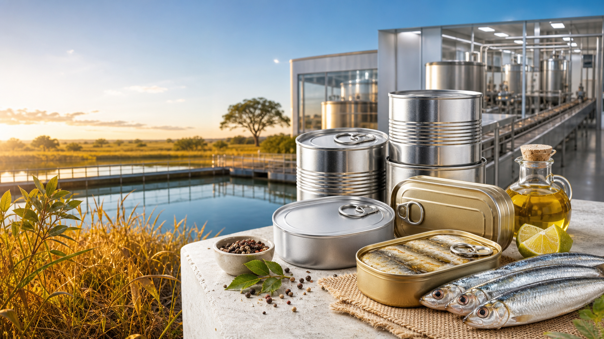

Peixe enlatado
Produto base em lata, com embalagem segura, longa validade e distribuicao facilitada.

Projeto industrial de alimentos do Tocantins
Uma proposta de fabrica de peixes enlatados para transformar a aquicultura tocantinense em alimento pratico, seguro e competitivo.
O Sardinho do Cerrado nasce como uma plataforma industrial para beneficiar, enlatar e distribuir peixes produzidos no Tocantins. A pagina ja traz uma narrativa moderna para atrair parceiros, investidores, produtores, compradores institucionais e publico consumidor.
Substitua os textos marcados pelos dados oficiais do projeto: capacidade produtiva, cidade de implantacao, especies utilizadas, parceiros, certificacoes, investimento estimado e canais comerciais.
Use estes blocos para apresentar os formatos da linha, diferenciais nutricionais e posicionamento comercial.
Produto base em lata, com embalagem segura, longa validade e distribuicao facilitada.
Espaco para receitas com oleo, molho, temperos do Cerrado ou outras formulacoes aprovadas.
Posicionamento para merenda escolar, cestas, varejo, atacarejo, distribuidores e programas alimentares.
Preencha esta area com o fluxo produtivo real: recepcao do pescado, beneficiamento, cozimento, enlatamento, esterilizacao, rotulagem, armazenagem e expedicao.
Use estes pontos como roteiro para enriquecer a pagina com dados, fotos e depoimentos.
Gere renda local, fortaleça produtores, estimule fornecedores e aumente a competitividade do Tocantins.
Mostre integracao com piscicultores, assistencia tecnica, padronizacao e previsibilidade de compra.
Inclua informacoes sobre inspeção, boas praticas, rastreabilidade, laboratorio e normas sanitarias.
Explique uso eficiente de materia-prima, logistica, reducao de perdas e responsabilidade ambiental.
Acrescente aqui dados de mercado, comparativos de consumo, publico-alvo, canais de venda, estrategia de preco e diferenciais em relacao a conservas tradicionais.
Quando houver dados definitivos, esta area pode virar um cronograma de obras, licenciamento, compra de equipamentos, testes industriais e lancamento comercial.
Contato institucional
Substitua pelos dados oficiais da FIETO, equipe do projeto, telefone, e-mail e formulario.